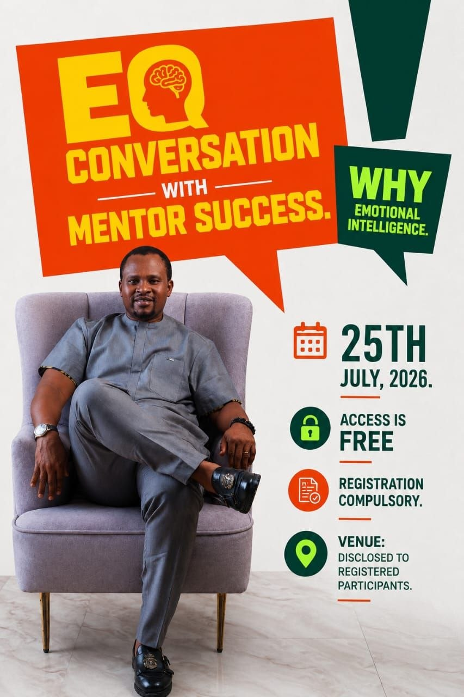
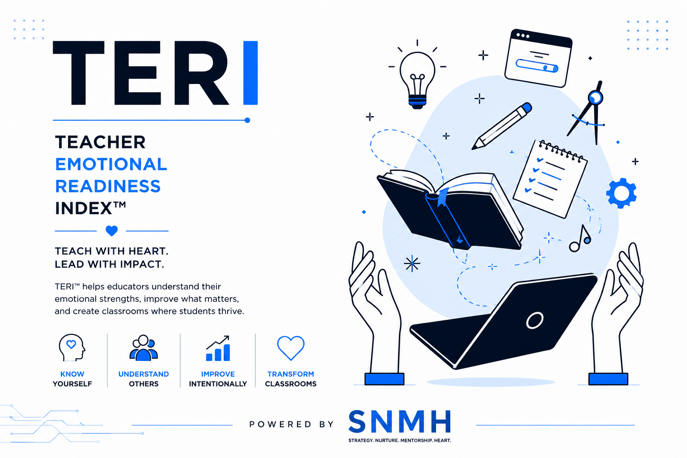
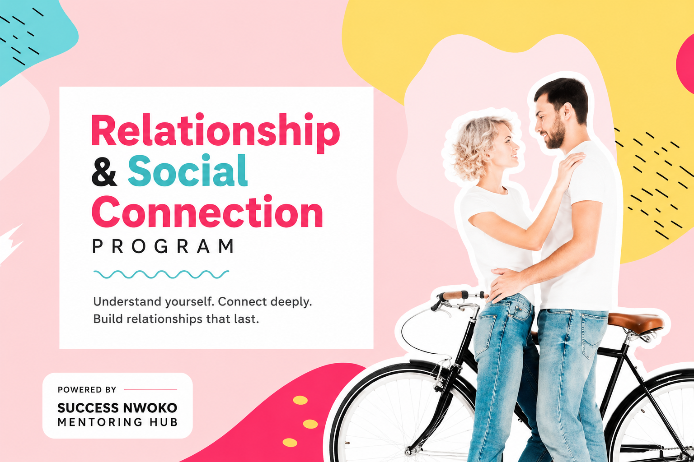

What I Offer
Tailored coaching, training, and speaking engagements rooted in the R.E.A.L. framework — designed to create lasting transformation in individuals and organisations.

EQ Conversation
Register for the live mentor-led session that brings the books and mentorship principles together through practical emotional intelligence coaching.
Register for FreeAssessment Tool
The TERI Framework is a diagnostic tool designed to assess and develop the emotional readiness of teachers and educators. Discover your emotional strengths, identify blind spots, and receive a personalised roadmap to become a more connected and impactful teacher.
Take the TERI Assessment →

Relationship Programme
A guided programme designed to help you build deeper, healthier relationships and stronger social connection. Explore your relational patterns, strengthen communication, and learn practical tools to connect authentically with the people around you.
Join the Program →Our Framework
Every programme at Success Nwoko Mentoring Hub is built on seven interconnected areas of human development
Building authentic connections, empathy, and emotional awareness across personal and professional relationships.
Developing the mindset, skills, and discipline to build sustainable businesses and financial independence.
Cultivating critical thinking, learning strategies, and intellectual discipline for continuous growth.
Building vision-driven, servant-hearted leaders who inspire teams and create lasting value.
Mastering self-awareness, empathy, and emotional regulation for healthier decisions and relationships.
Building wealth-creating mindsets and practical financial management for long-term security.
Discovering and living out your unique calling — connecting personal development to deeper meaning.
Personal one-on-one coaching sessions to help you understand and master your emotional patterns. We'll identify the emotional blocks holding you back in life, relationships, or career — and build a clear plan to overcome them.
Best for: Individuals seeking personal transformation, professionals wanting to lead better, entrepreneurs building with clarity.
Book a SessionRooted in the principles of Mastering Money Through EQ, this coaching programme helps you identify and rewire the emotional patterns that drive poor financial decisions — and replace them with habits that build wealth.
Best for: Anyone struggling with money management, savings, investment decisions, or financial anxiety.
Book a SessionBased on the principles in Smart Emotion Better Sales – African Way, this training equips sales teams with EQ tools that help them connect, build trust, handle rejection, and close deals in the African market context.
Best for: Sales managers, marketing teams, entrepreneurs, insurance agents, real estate professionals.
Request TrainingA structured programme for teenagers and young adults, inspired by Choose Different. Success helps young people navigate identity, peer pressure, digital life, and decision-making with emotional strength and purpose.
Best for: Secondary schools, churches, youth organisations, and parents seeking structured mentoring for teens.
Enquire NowSuccess delivers powerful, engaging talks on emotional intelligence, financial freedom, sales excellence, and youth development. His sessions are research-backed, culturally grounded, and built to move audiences to action.
Best for: Conferences, corporate events, church programmes, school assemblies, graduation ceremonies.
Book a SpeakerFull-day or multi-day workshops for organisations looking to build emotionally intelligent teams and leaders. Customised to your industry, team size, and specific challenges.
Best for: HR teams, leadership development programmes, banks, NGOs, and growth-stage companies.
Get a ProposalThe TERI Framework is a diagnostic tool designed to assess and develop the emotional readiness of teachers and educators. It measures how emotionally prepared a teacher is to create a safe, connected, and high-impact learning environment for students.
Using the TERI assessment, educators gain deep insight into their emotional strengths and blind spots — and receive a personalised roadmap to grow as emotionally intelligent teachers who truly connect with and impact their students.
Best for: Teachers, school administrators, education consultants, and institutions committed to emotionally intelligent learning environments.
Take the TERI Assessment →A guided programme designed to help you build deeper, healthier relationships and stronger social connection. Explore your relational patterns, strengthen communication, and learn practical tools to connect authentically with the people around you.
Best for: Individuals, couples, and groups looking to build more authentic, emotionally intelligent relationships.
Join the Program →